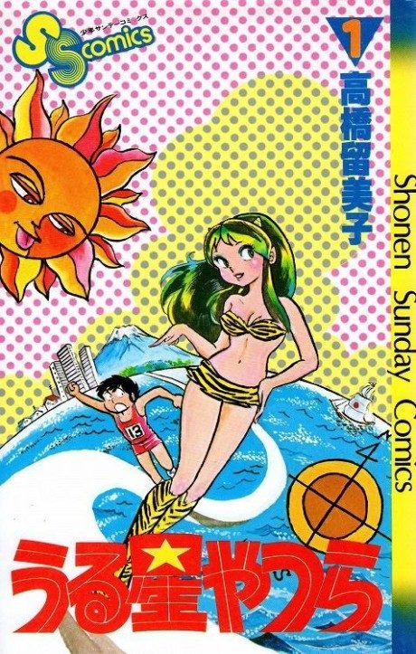

Urusei Yatsura
うる星やつら
After the anime, read the manga from Chapter 299.
7.4AniList score
—Animeter, no votes yet
195episodes
Is it worth pushing through?
Built from what visitors report across all 195 episodes.
Loading reports…Checking what other people said about this one.
Sign in above with your email to add your report.